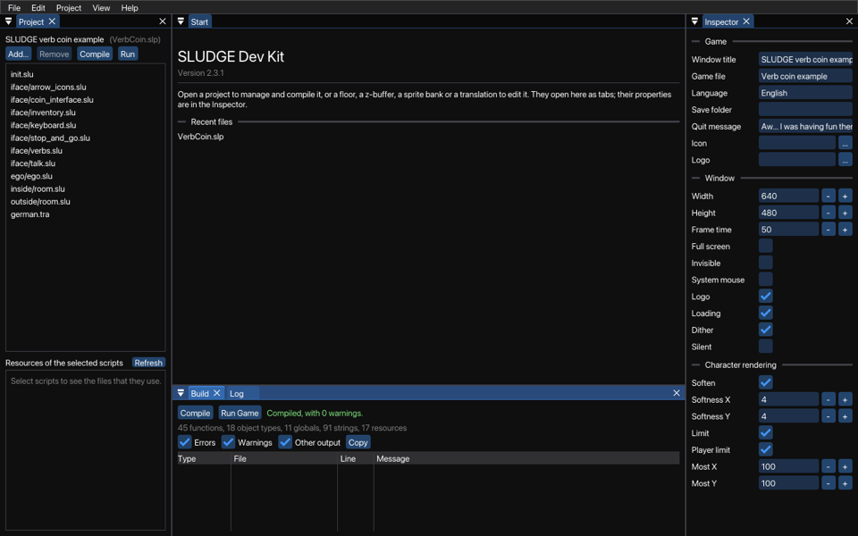

The SLUDGE Dev Kit is one program, on Windows, macOS and Linux, for the whole of making a game. Open a project in it to manage its files and settings, compile it and run it, and open the floors, z-buffers, sprite banks, rigs, clips and translations of the game to edit them. They open as tabs next to each other, and you can have as many open as you like.

Around the tabs are panels, which you can drag to another place or into a window of their own. View > Reset Layout puts them back.
Everything that you change, in every kind of file, you can undo with Edit > Undo and redo with Edit > Redo. A tab with changes that you haven't saved has a dot, and when you close it or quit, the Dev Kit asks whether to save them. The Dev Kit remembers the files that you opened last in File > Open Recent, and on its Start page.
The Dev Kit comes with the compiler and the engine, and uses them when you compile and run a game. It opens the scripts of a project in a script editor of its own, which knows the built-in functions and the names of the project, and sees mistakes while you type.
On macOS, use Command where it says Ctrl.
The engine is the only part of SLUDGE that's needed in order to play a SLUDGE game. Here's a bit more information on how that works:
How to release the finished game.
.ini Files for Compiled SLUDGE Games
SLUDGE and this SLUDGE documentation are copyright Hungry Software and contributors 2000-2012